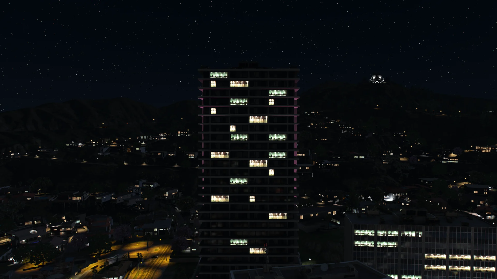
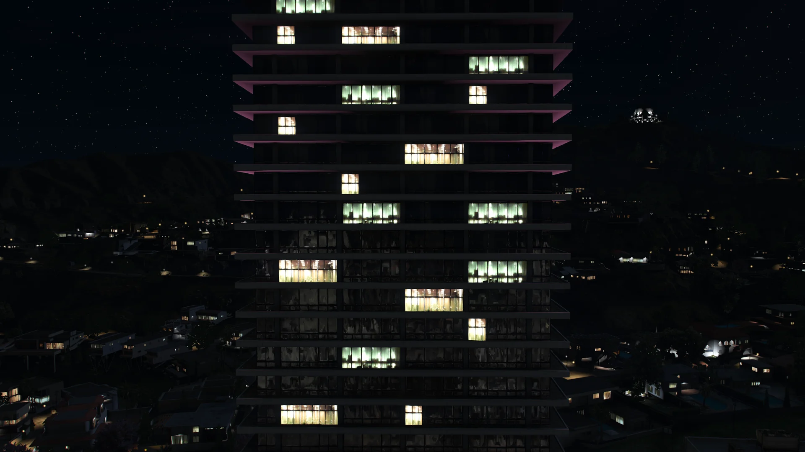
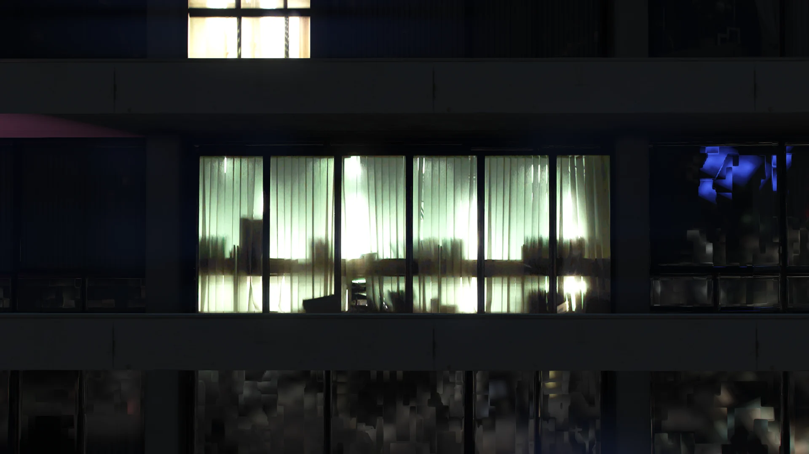
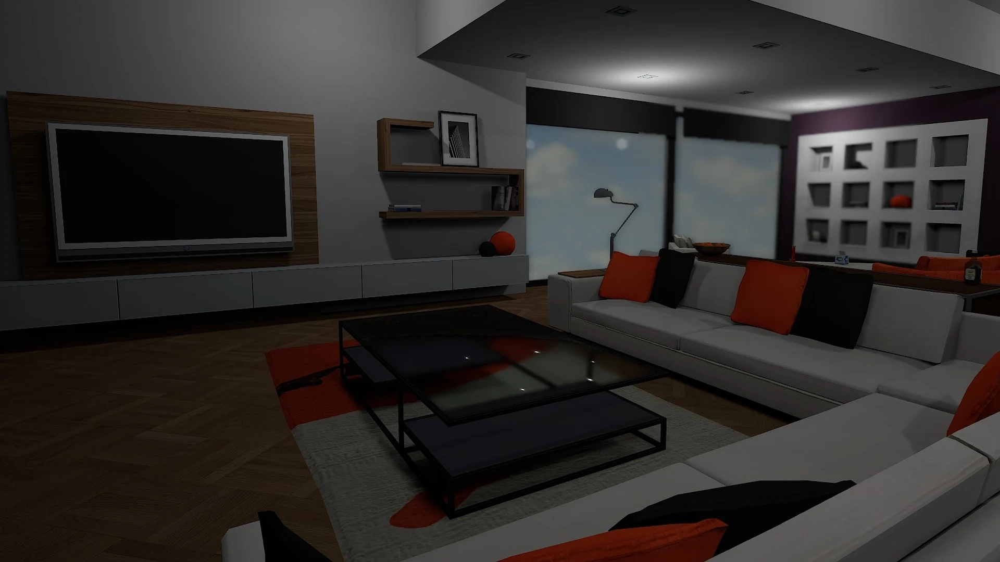
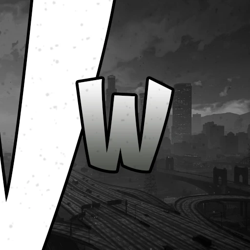

Bienvenido a la ciudad
Servidor de roleplay · GTA V
Una comunidad de roleplay serio donde cada personaje importa. Crea tu identidad, busca trabajo, monta un negocio o elige el lado oscuro de la ciudad. Tú decides quién quieres ser.

Conexión F8
connect cfx.re/join/9vqaoe
Acceso
Whitelist · +16
Sobre nosotros
Willow Community nace con una idea sencilla: que el rol sea lo primero. Aquí no se viene a ganar, se viene a vivir historias. Cada conversación, cada persecución y cada negocio forman parte de una ciudad que cambia con quienes la habitan.
Buscamos jugadores que disfruten interpretando, que respeten a los demás y que quieran construir algo duradero. Si llevas años en el rol o es tu primera vez, en Willow encontrarás un sitio para ti y un equipo de staff dispuesto a ayudarte.
Personajes con historia, motivaciones y consecuencias reales dentro de la ciudad.
Respeto dentro y fuera del juego. Aquí nadie se queda solo.
Un equipo activo que escucha, resuelve dudas y cuida la experiencia.
Novedades y ajustes guiados por las propuestas de la comunidad.
Características
Sistemas pensados para que el rol fluya y cada decisión tenga peso.
Gana tu dinero trabajando, invierte en negocios y gestiona tus ahorros. Nada cae del cielo.
Mecánico, taxista, camionero, hostelería y mucho más. Empieza desde abajo y asciende.
Policía y servicios médicos con rangos, formación y protocolos propios.
Bandas, organizaciones y golpes planeados con rol de calidad y riesgos de verdad.
Compra tu casa, abre tu local y deja tu huella en la ciudad.
Concesionario, talleres, seguros y personalización para tu coche.
Facciones
Las plazas en facciones se solicitan a través de Discord. Consulta los requisitos de cada una en su canal.
Cómo empezar
Es el centro de la comunidad: anuncios, soporte, solicitudes y todo lo que pasa en Willow.
Conocerlas es obligatorio. Garantizan que todos disfrutemos de un rol justo y de calidad.
Supera la whitelist desde el Discord (+16), abre FiveM, pulsa F8 y escribe connect cfx.re/join/9vqaoe.
Normativas
Elige una sección para consultar su normativa. Cada facción tiene la suya.
Normativa {{soonName}}
Esta normativa estará disponible muy pronto. Mientras tanto, consulta las dudas en el canal de la facción en Discord.
Galería
Equipo
Fundador
Co-fundadora
Programador
Administrador
Administrador
Administrador
Donaciones
Las donaciones son voluntarias y nos ayudan a mantener el servidor y seguir mejorándolo. Como agradecimiento, puedes conseguir contenido exclusivo para tu personaje.
Precio a consultar por Discord
Próximamente
Todavía no hay {{donCatLower}} disponibles. Pregunta en Discord si buscas algo concreto.
Se conservan tras un CK. Según la normativa general, los bienes donados no se pierden aunque tu personaje sufra un CK.
¿Dudas? Abre un ticket en Discord antes de donar y el staff te ayudará a elegir.
Willow Community es un servidor independiente, no afiliado ni respaldado por Rockstar Games ni Take-Two Interactive.
Preguntas frecuentes